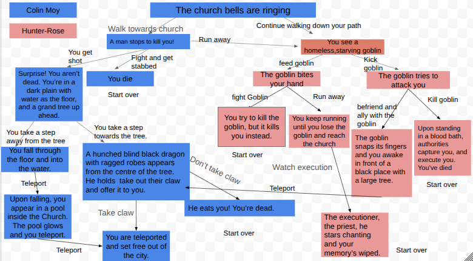

Me and my partner made a cool dark medieval fantasy game.
I was assigned a project with a partner where we had to pick a topic, then create a game where people can choose different options and go on their own adventure based on what they picked. This project required us to use Github and our IDE skills. The topic me and my partner chose was dark medieval fantasy because we really loved the idea, it seemed the most fun and knew we would have a lot of oppurtunities to use our imagination and be creative with it.
The first step me and my partner did was make a plan, together we decided how our game would start then we each did our own part. We stopped once we realized that we had a too many files. Next, me and my partner decided to go into our IDE, into your projects folder, then made all the files we had in our plan, into MD's or folders in our IDE. Once that was finished, we each git pulled the chnages that we had, this way all the work we did seperately would appear in both of our IDE's and we woulnd't have to manually add them.
The challenges that me and my partner faced in this project was organizing our md's in our IDE. There were so many files,it was chaotic and that led us to forget which files linked to which. We even had to look back into our plan to remind ourselves what file connects to what. So, I decided to make folders and put some of my files in there, that way I know where they they go and which ones they link too. This helped me better understand my part of the adventure game and I didn't get confused anymore.
Another challenge was linking the files, sometimes the links wouldn't work because of how we named our files. For instance, if the file or folder name had a period, a space, or a capital letter then the links wouldn't work. In order to solve this, me and my partner had to go back and rename all of our files, which was annoying and tedious. However, it was worth it because our links ended up working and our adventure game worked perfectly on github!
If I had more time, then I would add images so that my peers get a visual of what I was describing and it makes their experience more engaging. Additionally, I might add a few more files because I have a lot of other ideas that I would want to incorporate in the game to make it more fun and exciting!
Link about the project